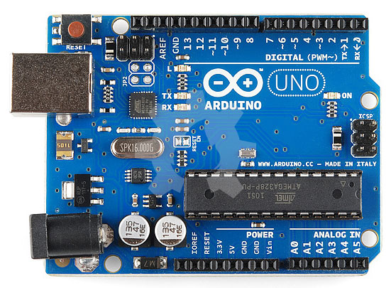

Mengenal Arduino Uno¶
Arduino Uno adalah papan mikrokontroler berbasis ATmega328 (datasheet). Arduino Uno memiliki 14 digital pin input/output, dimana 6 pin digunakan sebagai output PWM, 6 pin input analog, 16 MHz resonator keramik, koneksi USB, jack catu daya eksternal, header ICSP, dan tombol reset. Ini semua berisi hal-hal yang diperlukan untuk mendukung mikrokontroler; sederhana saja, hanya dengan menghubungkannya ke komputer dengan kabel USB atau sumber tegangan dengan adaptor AC-DC dan atau baterai untuk memulai menggunakan papan arduino.

Arduino Uno R3 berbeda dari semua papan Uno sebelumnya yang sudah tidak menggunakan chip driver FTDI USB-to-serial. Sekarang, Arduino Uno menggunakan fitur Atmega16U2 (Atmega8U2 sampai dengan versi R2) yang diprogram sebagai konverter USB-to-serial. Arduino Uno Revisi 2 memiliki resistor pulling untuk 8U2 dari jalur HWB ke ground, sehingga lebih mudah untuk dimasukkan ke dalam mode DFU.
Arduino Uno Revisi 3 memiliki fitur-fitur baru berikut:
-
1.0 pinout: ditambahkan pin SDA dan SCL yang dekat dengan pin AREF dan dua pin baru lainnya yang ditempatkan dekat dengan pin RESET, sedangkan IOREF digunakan sebagai perisai untuk beradaptasi dengan tegangan yang tersedia pada papan. Kedepannya, perisai akan dibuat kompatibel dengan dua jenis papan yang menggunakan AVR yang beroperasi pada tegangan 5V dan dengan Arduino Due yang beroperasi pada tegangan 3.3V. Sedangkan 2 pin tidak terhubung, yang disediakan untuk tujuan masa depan.
-
Sirkuit RESET handal.
-
Atmega 16U2 menggantikan 8U2.
"Uno" berarti satu yang diambil dari bahasa Italia dan penggunaan nama ini untuk menandai peluncuran Arduino 1.0. Uno dan versi 1.0 akan menjadi versi referensi Arduino, yang akan terus berkembang. Uno adalah yang terbaru dalam serangkaian papan USB Arduino, dan digunakan sebagai model referensi untuk platform Arduino.
Ringkasan¶
| Info | Spesifikasi |
|---|---|
| Mikrokontroler | ATmega328 |
| Tegangan Operasi | 5 Volt |
| Input Voltage (disarankan) | 7 - 12 Volt |
| Input Voltage (batas akhir) | 6 - 20 Volt |
| Digital I/O Pin | 14 (6 pin sebagai output PWM) |
| Analog Input Pin | 6 |
| Arus DC per pin I/O | 40 mA |
| Arus DC untuk pin 3.3V | 50 mA |
| Flash Memory | 32 KB (ATmega328) 0,5 KB untuk bootloader |
| SRAM | 2 KB (ATmega328) |
| EEPROM | 1 KB (ATmega328) |
| Clock Speed | 16 MHz |
Skema & Referensi Desain¶
File EAGLE: Arduino-uno-Rev3-referensi-design.zip (CATATAN: hanya mampu dibuka dengan Eagle 6.0 dan atau yang lebih baru)
Skema: Arduino-uno-Rev3-schematic.pdf
CATATAN: Sebagai referensi desain, Arduino dapat menggunakan ATmega8, 168, atau 328, model saat ini menggunakan ATmega328, tapi ATmega8 digunakan dalam skema untuk referensi. Konfigurasi pin identik pada ketiga jenis prosesor tersebut.
Sumber Daya (Tegangan)¶
Arduino Uno dapat diaktifkan melalui koneksi USB atau dengan catu daya eksternal. Sumber daya akan dipilih secara otomatis oleh Arduino. Sumber daya eksternal (non-USB) dapat berasal baik dari adaptor AC-DC atau baterai. Adaptor dapat dihubungkan dengan mencolokkan steker 2,1 mm yang bagian tengahnya terminal positif ke ke jack sumber tegangan pada papan. Jika tegangan berasal dari baterai dapat langsung dihubungkan melalui header pin Gnd dan pin Vin dari konektor POWER.
Papan Arduino Uno dapat beroperasi dengan pasokan daya eksternal 6 Volt sampai 20 volt. Jika diberi tegangan kurang dari 7 Volt, maka, pin 5 Volt mungkin akan menghasilkan tegangan kurang dari 5 Volt dan ini akan membuat papan menjadi tidak stabil. Jika sumber tegangan menggunakan lebih dari 12 Volt, regulator tegangan akan mengalami panas berlebihan dan bisa merusak papan. Rentang sumber tegangan yang dianjurkan adalah 7 Volt sampai 12 Volt.
Pin tegangan yang tersedia pada papan Arduino adalah sebagai berikut:
-
VIN : Adalah input tegangan untuk papan Arduino ketika menggunakan sumber daya eksternal (sebagai 'saingan' tegangan 5 Volt dari koneksi USB atau sumber daya ter-regulator lainnya). Anda dapat memberikan tegangan melalui pin ini, atau jika memasok tegangan untuk papan melalui jack power, kita bisa mengakses/mengambil tegangan melalui pin ini.
-
5V : Sebuah pin yang mengeluarkan tegangan ter-regulator 5 Volt, dari pin ini tegangan sudah diatur (ter-regulator) dari regulator yang tersedia (built-in) pada papan. Arduino dapat diaktifkan dengan sumber daya baik berasal dari jack power DC (7-12 Volt), konektor USB (5 Volt), atau pin VIN pada board (7-12 Volt). Memberikan tegangan melalui pin 5V atau 3.3V secara langsung tanpa melewati regulator dapat merusak papan Arduino.
-
3V3 : Sebuah pin yang menghasilkan tegangan 3,3 Volt. Tegangan ini dihasilkan oleh regulator yang terdapat pada papan (on-board). Arus maksimum yang dihasilkan adalah 50 mA.
-
GND : Pin Ground atau Massa.
-
IOREF : Pin ini pada papan Arduino berfungsi untuk memberikan referensi tegangan yang beroperasi pada mikrokontroler. Sebuah perisai (shield) dikonfigurasi dengan benar untuk dapat membaca pin tegangan IOREF dan memilih sumber daya yang tepat atau mengaktifkan penerjemah tegangan (voltage translator) pada output untuk bekerja pada tegangan 5 Volt atau 3,3 Volt.
Memori¶
Prosessor ATmega328 memiliki memori sebesar 32 KB yang mana sebesar 0,5 KB digunakan untuk menyimpan file bootloader. ATmega328 juga memiliki 2 KB SRAM dan 1 KB EEPROM (yang dapat dibaca dan ditulis dengan perpustakaan EEPROM).
Input dan Output¶
Masing-masing dari 14 pin digital pada Arduino Uno dapat digunakan sebagai input atau output, dengan menggunakan fungsi pinMode() , digitalWrite() , dan digitalRead(). Semua pin beroperasi pada tegangan 5 volt. Setiap pin dapat memberikan atau menerima arus maksimum 40 mA dan memiliki resistor pull-up internal (terputus secara default) sebesar 20-50 kOhm. Selain itu beberapa pin memiliki fungsi khusus, yaitu:
Serial : 0 (RX) dan 1 (TX). Digunakan untuk menerima (RX) dan mengirimkan (TX) TTL data serial. Pin ini terhubung ke pin korespondensi dari chip ATmega8U2 Serial USB-to-TTL. External Interrupt (Interupsi Eksternal): Pin 2 dan pin 3 ini dapat dikonfigurasi untuk memicu sebuah interupsi pada nilai yang rendah, meningkat atau menurun, atau perubahan nilai. Baca rincian fungsi attachInterrupt() (belum diterbitkan saat artikel ini ditulis).
-
PWM : Pin 3, 5, 6, 9, 10, dan 11. Menyediakan output PWM 8-bit dengan fungsi analogWrite().
-
SPI : Pin 10 (SS), 11 (MOSI), 12 (MISO), 13 (SCK). Pin ini mendukung komunikasi SPI menggunakan perpustakaan SPI.
-
LED : Pin 13. Tersedia secara built-in pada papan Arduino Uno. LED terhubung ke pin digital 13. Ketika pin diset bernilai HIGH, maka LED menyala, dan ketika pin diset bernilai LOW, maka LED padam.
Arduino Uno memiliki 6 pin sebagai input analog, diberi label A0 sampai dengan A5, yang masing-masing menyediakan resolusi 10 bit (yaitu 1024 nilai yang berbeda). Secara default pin ini dapat diukur/diatur dari mulai Ground sampai dengan 5 Volt, juga memungkinkan untuk mengubah titik jangkauan tertinggi atau terendah mereka menggunakan pin AREF dan fungsi analogReference(). Selain itu juga, beberapa pin memiliki fungsi yang dikhususkan, yaitu:
- TWI : Pin A4 atau SDA dan pin A5 atau SCL. Yang mendukung komunikasi TWI menggunakan perpustakaan Wire.
Masih ada beberapa pin lainnya pada Arduino Uno, yaitu:
-
AREF : Referensi tegangan untuk input analog. Digunakan dengan fungsi analogReference().
-
RESET : Jalur LOW ini digunakan untuk me-reset (menghidupkan ulang) mikrokontroler. Jalur ini biasanya digunakan untuk menambahkan tombol reset pada shield yang menghalangi papan utama Arduino.
Perhatikan pemetaan antara pin Arduino dan port ATmega328. Pemetaan untuk ATmega8, 168, dan 328 sangat identik.

Komunikasi¶
Arduino Uno memiliki sejumlah fasilitas untuk berkomunikasi dengan komputer, dengan Arduino lain, atau dengan mikrokontroler lainnya. ATmega328 menyediakan komunikasi serial UART TTL (5 Volt), yang tersedia pada pin digital 0 (RX) dan pin 1 (TX). Sebuah chip ATmega16U2 yang terdapat pada papan digunakan sebagai media komunikasi serial melalui USB dan muncul sebagai COM Port Virtual (pada Device komputer) untuk berkomunikasi dengan perangkat lunak pada komputer. Firmware 16U2 menggunakan driver standar USB COM, dan tidak membutuhkan driver eksternal. Namun pada sistem operasi Windows, file .inf masih dibutuhkan. Perangkat lunak Arduino termasuk didalamnya serial monitor memungkinkan data tekstual sederhana dikirim ke dan dari papan Arduino. LED RX dan TX yang tersedia pada papan akan berkedip ketika data sedang dikirim atau diterima melalui chip USB-to-serial yang terhubung melalui USB komputer (tetapi tidak untuk komunikasi serial seperti pada pin 0 dan 1). Sebuah perpustakaan SoftwareSerial memungkinkan komunikasi serial pada beberapa pin digital Uno. ATmega328 juga mendukung komunikasi I2C (TWI) dan SPI. Perangkat lunak Arduino termasuk perpustakaan Wire digunakan untuk menyederhanakan penggunaan bus I2C. Untuk komunikasi SPI, menggunakan perpustakaan SPI.
Pemrograman¶
Arduino Uno dapat diprogram dengan software Arduino (Unduh perangkat lunak Arduino). (Mengenai pemahasan lebih rinci tentang perangkat lunak Arduino akan dibahas pada artikel terpisah). ATmega328 pada Arduino Uno sudah tersedia preburned dengan bootloader (preburned dan bootloader apa bahasa Indonesianya?) yang memungkinkan Anda untuk meng-upload kode baru tanpa menggunakan programmer hardware eksternal. Hal ini karena komunikasi yang terjadi menggunakan protokol asli STK500. Anda juga dapat melewati (bypass) bootloader dan program mikrokontroler melalui pin header ICSP (In-Circuit Serial Programming). Chip ATmega16U2 (atau 8U2 pada board Rev. 1 dan Rev. 2) source code firmware tersedia. ATmega16U2/8U2 dapat dimuat dengan bootloader DFU, yang dapat diaktifkan melalui:
-
Pada papan Revisi 1: Menghubungkan jumper solder di bagian belakang papan (dekat dengan peta Italia) dan kemudian akan me-reset 8U2.
-
Pada papan Revisi 2: Ada resistor yang menghubungkan jalur HWB 8U2/16U2 ke ground, sehingga lebih mudah untuk dimasukkan ke dalam mode DFU.
Kemudian Anda dapat menggunakan Atmel FLIP software (sistem operasi Windows) atau DFU programmer (sistem operasi Mac OS X dan Linux) untuk memuat firmware baru. Atau Anda dapat menggunakan pin header ISP dengan programmer eksternal (overwrite DFU bootloader).
Reset (Software) Otomatis¶
Daripada menekan tombol reset sebelum upload, Arduino Uno didesain dengan cara yang memungkinkan Anda untuk me-reset melalui perangkat lunak yang berjalan pada komputer yang terhubung. Salah satu jalur kontrol hardware (DTR) mengalir dari ATmega8U2/16U2 dan terhubung ke jalur reset dari ATmega328 melalui kapasitor 100 nanofarad. Bila jalur ini di-set rendah/low, jalur reset drop cukup lama untuk me-reset chip. Perangkat lunak Arduino menggunakan kemampuan ini untuk memungkinkan Anda meng-upload kode dengan hanya menekan tombol upload pada perangkat lunak Arduino. Ini berarti bahwa bootloader memiliki rentang waktu yang lebih pendek, seperti menurunkan DTR dapat terkoordinasi (berjalan beriringan) dengan dimulainya upload. Pengaturan ini juga memiliki implikasi lain. Ketika Arduino Uno terhubung dengan komputer yang menggunakan sistem operasi Mac OS X atau Linux, papan Arduino akan di-reset setiap kali dihubungkan dengan software komputer (melalui USB). Dan setengah detik kemudian atau lebih, bootloader berjalan pada papan Arduino Uno. Proses reset melalui program ini digunakan untuk mengabaikan data yang cacat (yaitu apapun selain meng-upload kode baru), ia akan memotong dan membuang beberapa byte pertama dari data yang dikirim ke papan setelah sambungan dibuka. Jika sebuah sketsa dijalankan pada papan untuk menerima satu kali konfigurasi atau menerima data lain ketika pertama kali dijalankan, pastikan bahwa perangkat lunak diberikan waktu untuk berkomunikasi dengan menunggu satu detik setelah terkoneksi dan sebelum mengirim data. Arduino Uno memiliki trek jalur yang dapat dipotong untuk menonaktifkan fungsi auto-reset. Pad di kedua sisi jalur dapat hubungkan dengan disolder untuk mengaktifkan kembali fungsi auto-reset. Pad berlabel "RESET-EN". Anda juga dapat menonaktifkan auto-reset dengan menghubungkan resistor 110 ohm dari 5V ke jalur reset.
Perlindungan Beban Berlebih pada USB¶
Arduino Uno memiliki polyfuse reset yang melindungi port USB komputer Anda dari hubungan singkat dan arus lebih. Meskipun pada dasarnya komputer telah memiliki perlindungan internal pada port USB mereka sendiri, sekring memberikan lapisan perlindungan tambahan. Jika arus lebih dari 500 mA dihubungkan ke port USB, sekring secara otomatis akan memutuskan sambungan sampai hubungan singkat atau overload dihapus/dibuang.
Karakteristik Fisik¶
Panjang dan lebar maksimum PCB Arduino Uno adalah 2.7 x 2.1 inch (6,8 x 5,3 cm), dengan konektor USB dan jack power menonjol melampaui batas dimensi. Empat lubang sekrup memungkinkan papan terpasang pada suatu permukaan atau wadah. Perhatikan bahwa jarak antara pin digital 7 dan 8 adalah 160 mil (0.16"), tidak seperti pin lainnya dengan kelipatan genap berjarak 100 mil.
Daftar Pustaka¶
- Arduino Uno (Halaman diakses pada tanggal 5 Agustus 2014, 06:51 AM)